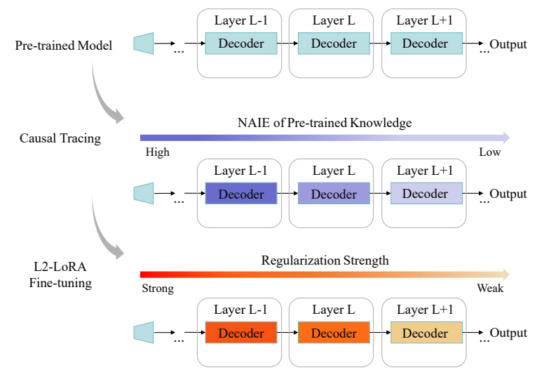
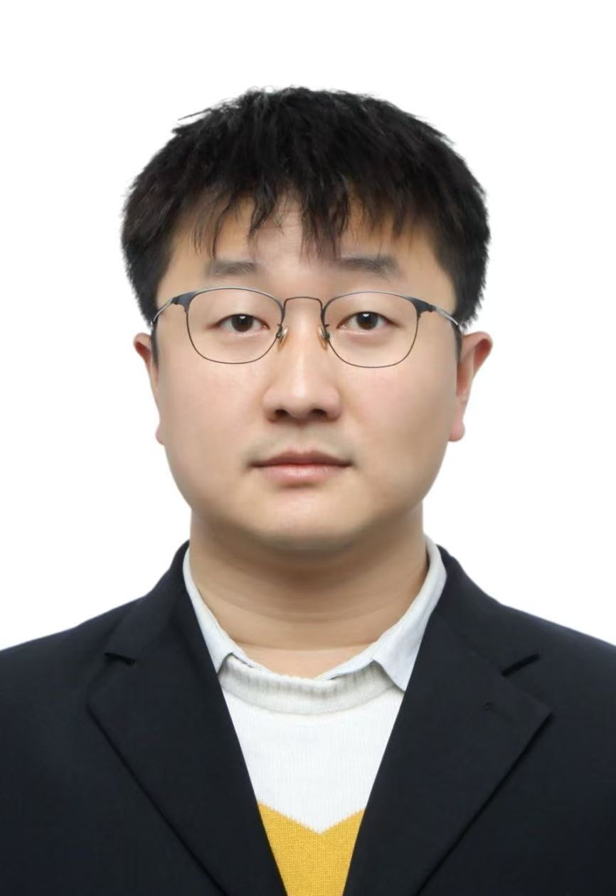
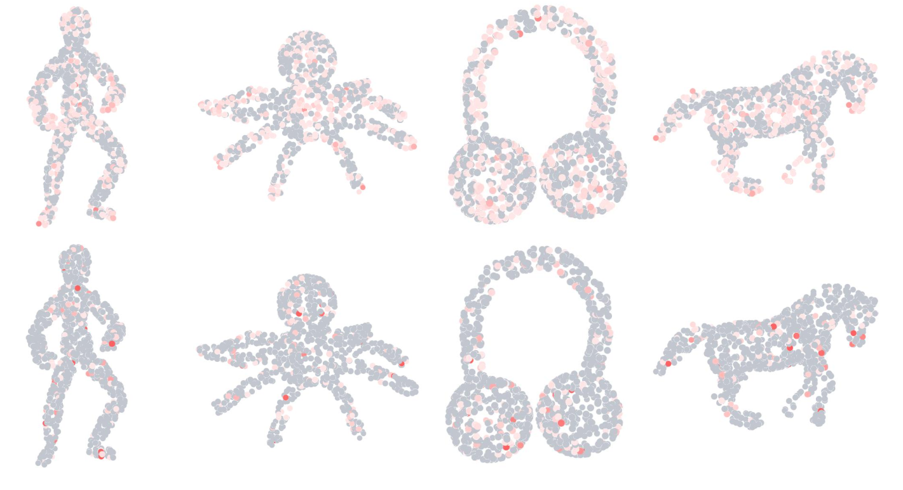

AAAI 2026
L2-LoRA: Improving Low-Rank Adaptation with Layer-Specific Regularization
Layer-specific regularization guided by knowledge localization helps preserve pretrained knowledge while adapting language models to downstream tasks.
PHD STUDENT / PEKING UNIVERSITY
I am a PhD student at Peking University, co-advised by Prof. Shikun Zhang and Prof. Wei Ye. My research interests lie in large language model (LLM) interpretability, efficient post-training, and LLM reasoning and evaluation.
I received my Master's degree from Peking University, where my research focused on 3D deep learning, specifically on point clouds.
xiangzhang@stu.pku.edu.cn

My research aims to make large language models better understood, more adaptable, and more reliably evaluated.
Knowledge representation in LLMs, interpretable parameter updates during post-training.
Parameter-efficient fine-tuning (PEFT), low-rank adaptation.
Benchmark design, reasoning behavior analysis.

AAAI 2026
Layer-specific regularization guided by knowledge localization helps preserve pretrained knowledge while adapting language models to downstream tasks.

AAAI 2021
A bag-of-words pooling module aggregates local geometric features into global point cloud representations for classification, retrieval, and segmentation.
PhD Student · Current
Advisor: Prof. Shikun Zhang and Prof. Wei Ye. Research on LLM interpretability, efficient post-training, and reasoning and evaluation.
Research Intern · Department of Automation
Advisor: Prof. Xiangyang Ji. Research on 3D pose and shape transfer.
Master's Studies
Advisors: Prof. Xiangqun Chen and Prof. Zhouhui Lian. Research on 3D deep learning and point cloud analysis.